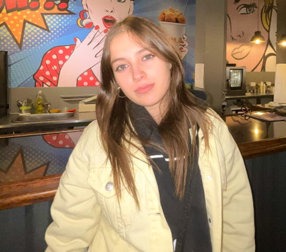
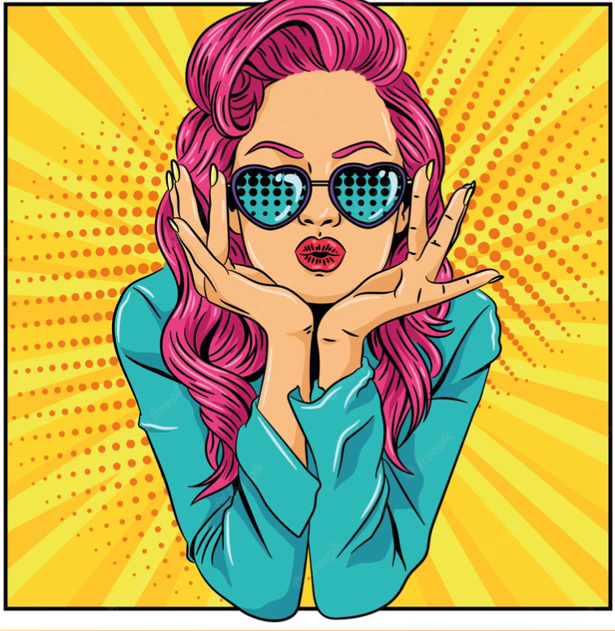

Sobre Mí

Me llamo Micol Freue, tengo 21 años y estudio Comunicación Digital en Universidad de Palermo. Me apasiona la innovación, la creatividad y el diseño Ux/Ui. Este trabajo me inspiró a salir de mi zona de confort y los colores pasteles. Pude ver un poco más fondo la creatividad y utilizar colores vibrantes y copados para el sitio web.
Tuve una materia de arte, en la que pude indagar a fondo cada una de las vanguardias. Pop art, es la que más me interesó para realizar este trabajo, porque me atrajo la originalidad de las obras y los colores llamativos en ellas. Fue uno de los movimientos artísticos que más recordaba y Andy Warhol me parece un referente excelente de la misma.
